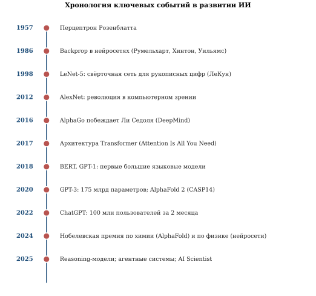
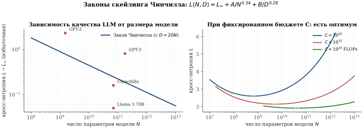
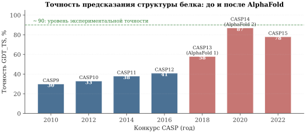

3.5 Как искусственный интеллект меняет мир
В этом завершающем параграфе мы поднимемся над частными алгоритмами и посмотрим на современный ИИ как на явление, — разберёмся, как последние десять лет изменили картину мира, какие силы движут революцию больших моделей, что ИИ умеет, а что — пока нет, и как с большой осторожностью можно говорить о ближайшем будущем (рис. 3.29).

AlphaGo и второй прорыв в обучении с подкреплением
С точки зрения общественного восприятия, ИИ стал «настоящим ИИ» 9 марта 2016 г., в первый день матча AlphaGo против Ли Седоля. Если поражение Гарри Каспарова шахматному компьютеру Deep Blue в 1997 г. многие готовы были списать на «грубый перебор», то с игрой го такое объяснение не проходило: число позиций (\sim 10^{170}, что превосходит число атомов в наблюдаемой Вселенной) исключает любой полный перебор. Считалось, что компьютер достигнет человеческого уровня в го не раньше чем через 30 лет. AlphaGo, разработанная компанией DeepMind, обыграла Ли Седоля со счётом 4:1.
Архитектура AlphaGo. Под капотом находились две глубокие свёрточные нейронные сети:
сеть стратегии (policy network): по позиции выдавала распределение вероятностей следующего хода;
сеть оценки (value network): по позиции выдавала оценку шансов на победу.
Они комбинировались с поиском Монте-Карло по дереву (Monte Carlo Tree Search, MCTS) и обучались на партиях, сыгранных людьми, — своего рода имитационное обучение.
AlphaGo Zero: ИИ, который учился сам. Поразительным продолжением стала система AlphaGo Zero (октябрь 2017): она не использовала никаких человеческих партий, а училась только играя сама с собой — так называемое обучение с подкреплением через self-play. За 40 дней самообучения она достигла уровня, превосходящего AlphaGo 2016-го года, и в матче из 100 партий выиграла у предыдущей версии со счётом 100:0.
AlphaGo Zero показала: ИИ может учиться, взаимодействуя сам с собой, не нуждаясь ни в каких внешних данных — лишь имея формализованную задачу и среду, в которой можно играть. Это принципиально меняет масштаб возможного: данных не хватает — ИИ их сам производит. Этот принцип лежит в основе многих современных направлений: автоматического доказательства теорем, поиска новых материалов, проектирования лекарств. Развитие идеи привело к концепции мультиагентного ИИ — системы, где много обучаемых агентов взаимодействуют друг с другом, образуя экосистему, в которой коллективное знание растёт быстрее индивидуального.
Революция трансформеров и появление ChatGPT
Вторая, ещё более масштабная революция произошла в области обработки естественного языка — и она опирается на одну архитектурную идею.
В июне 2017 г. группа исследователей Google (Васвани, Шазир, Парма́р и др.) опубликовала статью Attention Is All You Need, в которой предложила архитектуру трансформер (Transformer). Идея была одновременно простой и революционной: отказаться от последовательной (рекуррентной) обработки текста и заменить её на механизм внимания, который позволяет каждому слову последовательности «смотреть» на любые другие слова одновременно. Это дало модели возможность учитывать сколь угодно далёкие зависимости в тексте и принципиально ускорило обучение за счёт параллельных вычислений на GPU.
Каждое слово (точнее — его эмбеддинг) превращается в три вектора: ключ (key), значение (value) и запрос (query). Затем для каждого слова считаются веса внимания — скалярные произведения его запроса с ключами всех остальных слов, пропущенные через softmax. Эти веса говорят, насколько каждое другое слово важно для текущего. Финальный эмбеддинг слова получается как взвешенное среднее значений (с этими весами).
Многократно повторяя эту операцию слоями, модель формирует всё более и более «смысловое» представление каждого слова в контексте.
От Transformer до ChatGPT.
BERT (Google, 2018) — 110 млн параметров; первая big-scale демонстрация мощи трансформеров на задачах NLP.
GPT-3 (OpenAI, 2020) — 175 млрд параметров; впервые показала, что увеличение масштаба ведёт к новым, ранее невидимым способностям (emergent abilities) — перевод, программирование, элементарная арифметика «из коробки», без специального обучения этим задачам.
ChatGPT (OpenAI, ноябрь 2022) — интерактивный чат-интерфейс к модели GPT-3.5, дообученной на диалогах с обратной связью (RLHF). За 5 дней — миллион пользователей; за 2 месяца — 100 миллионов (самый быстрорастущий сервис в истории интернета). С этого момента ИИ стал массовым потребительским явлением.
Отечественные модели. Россия — одна из немногих стран, имеющих собственную линейку больших языковых моделей промышленного уровня. ruGPT-3 (Сбер, 2020) была одной из первых крупных русскоязычных LLM в мире — 13 млрд параметров. GigaChat (Сбер, начиная с 2023) — семейство мультимодальных диалоговых моделей. YandexGPT (Яндекс, 2023+) — модель, оптимизированная под русский язык и интегрированная в продукты Яндекса (Алиса, Поиск, Браузер).
Законы скейлинга: формулы
К 2020-му году стало понятно, что качество LLM — удивительно предсказуемая функция трёх параметров: размера модели N (числа обучаемых параметров), размера датасета D (числа токенов в обучающей выборке) и вычислительного бюджета C (числа операций FLOPS, затраченных на обучение).
Закон Каплана (2020). Группа Каплана из OpenAI обнаружила, что кросс-энтропия (метрика качества языковой модели) убывает по степенному закону:
\tag{3.54} L(N)\;\approx\;L_\infty+\frac{A}{N^{\alpha}},
с \alpha\approx 0{,}076 (фиксируя D достаточно большим), где L_\infty — асимптотическая «непредсказуемая шумовая часть» естественного языка.
Закон Чинчилла (2022). Команда DeepMind (Хоффман и др., работа Training Compute-Optimal Large Language Models) уточнила картину: для оптимального обучения размер модели и размер датасета должны расти вместе, в определённой пропорции. Совместный закон:
\tag{3.55} \;L(N,D)\;=\;L_\infty\;+\;\frac{A}{N^{0{,}34}}\;+\;\frac{B}{D^{0{,}28}},\;
с константами L_\infty\approx 1{,}69, A\approx 406, B\approx 411 (в естественных нормировках).
Главный практический вывод — правило 20\colon 1. При фиксированном вычислительном бюджете C\sim 6\cdot N\cdot D (приближённая формула для трансформера) минимум функции L(N,D) достигается, когда
D \;\approx\; 20\cdot N.
Иными словами, на каждый параметр модели должно приходиться примерно 20 токенов обучающего текста. Это правило — неожиданное и критически важное: до его обнаружения почти все большие модели (включая GPT-3) были недообучены — слишком велики при слишком маленькой обучающей выборке (рис. 3.30).

Закон скейлинга объясняет, почему именно сейчас, в 2020-х, ИИ совершил качественный скачок. До 2017-го у нас не было архитектуры (трансформера), способной эффективно обучаться при таких масштабах. До 2010-х не было таких массивов данных (всемирная паутина накопила миллиарды документов). И не было дешёвых GPU, способных параллельно крутить миллиарды умножений матриц. Качество современных LLM определяется тремя факторами:
грамотными архитектурными идеями (внимание, residual connections, layer normalization, RLHF и пр.);
размером модели N;
объёмом и качеством обучающих данных D.
И всё это поверх классической оптимизации (3.21) и backpropagation (3.22).
AlphaFold и Нобелевская премия 2024 г.
Долгое время ИИ оставался занятием академическим. Прорывом, после которого никто уже не мог говорить о «модной игрушке», стала AlphaFold (DeepMind, 2018; AlphaFold 2 — 2020). Эта система решает задачу, считавшуюся одной из главных «50-летних» проблем биологии: по последовательности аминокислот предсказать трёхмерную структуру белка.
Почему это важно. Белки — работники клетки. От их трёхмерной формы зависит, как они работают: блокируют ли вирусную инфекцию, переносят ли кислород, разлагают ли пластик, вызывают ли болезнь Альцгеймера. Долгое время структуру белка определяли экспериментально — методами рентгеновской кристаллографии или криоэлектронной микроскопии. Расшифровка одного белка могла занимать годы, и стоила сотни тысяч долларов.
К концу 2010-х было известно \sim 170\,000 структур (база PDB), при том что в человеческом организме одних только белков несколько сотен тысяч.
Что сделала AlphaFold. В 2020 г. команда DeepMind во главе с Демисом Хассабисом и Джоном Джампером представила AlphaFold 2 на конкурсе CASP14 (Critical Assessment of protein Structure Prediction) — международном двухгодичном соревновании по предсказанию структур. Результат был поразительным: средняя точность \approx 87 по шкале GDT_TS, что сравнимо с экспериментальной точностью кристаллографии (см. рис. 3.31).

В 2021 г. DeepMind открыто опубликовала структуры \sim 200 миллионов белков — практически все известные белки в природе. К концу 2024 г. базой AlphaFold пользовались более 2 миллионов учёных из 190 стран.
Нобелевская премия 2024. 9 октября 2024 г. Нобелевская премия по химии была присуждена Демису Хассабису и Джону Джамперу (DeepMind) за создание AlphaFold, а также Дэвиду Бейкеру (Вашингтонский университет) за работы по компьютерному дизайну белков. День спустя — Нобелевская премия по физике была присуждена Джону Хопфилду и Джеффри Хинтону «за основополагающие открытия и изобретения, позволившие машинное обучение с помощью искусственных нейронных сетей». Впервые в истории Нобелевские премии по двум естественнонаучным номинациям в один и тот же год были связаны с ИИ.
Связь с трансформерами. В сердце AlphaFold лежит модификация архитектуры трансформера. Её основное отличие: вместо последовательности слов модель обрабатывает «последовательность аминокислот» (\sim 20 типов «букв»); аналогом внимания между словами выступает внимание между парами аминокислот в свёрнутом белке. Это и есть глубокая идея: задачу структурной биологии удалось редуцировать к языковой архитектуре. Аналогичный подход — редукция новой задачи к языку — сегодня применяется к десяткам новых областей: химия, материаловедение, геномика, программирование, математика.
Шкалирование во время вывода и цепочки рассуждений
К 2023–2024 гг. стало понятно: одного только увеличения размера модели для следующих качественных скачков может не хватить. Возникла новая идея — масштабирование на этапе вывода (inference-time scaling).
Цепочки рассуждений (Chain-of-Thought). Классическая большая языковая модель сразу выдаёт ответ. Оказалось, что если попросить модель сначала рассуждать пошагово вслух — выписать промежуточные шаги, потом сделать вывод — качество ответов резко возрастает, особенно в задачах математики, программирования, формальной логики. Этот феномен описан в работе Wei et al. (2022) и получил название цепочек рассуждений (chain-of-thought, CoT).
Reasoning-модели (o1, o3 и далее). В сентябре 2024 г. OpenAI представила модель o1 — reasoning model, специально обученную «думать дольше» перед ответом. На олимпиадных задачах по математике (AIME, IMO уровень), программированию (Codeforces) и физике она показала результаты, сравнимые с лучшими школьниками-олимпиадниками. В 2025-м — модель o3, более продвинутая. У других разработчиков появились свои аналоги — Claude Sonnet с extended thinking (Anthropic), Gemini Deep Think (Google DeepMind), DeepSeek-R1 (Китай) и многие другие.
Reasoning-модель тратит существенно больше вычислений в момент ответа на запрос, а не на этапе обучения. Технически это делается двумя способами: (а) обучить модель генерировать длинные цепочки промежуточных рассуждений (десятки или сотни тысяч токенов) перед финальным ответом; (б) явно искать в дереве возможных рассуждений (как MCTS в AlphaGo), оценивая разные ветки и выбирая лучшую.
Возникает новая ось скейлинга: время на запрос. Это принципиально — значит, дальнейший прогресс может идти не только за счёт увеличения моделей, но и за счёт более длительных рассуждений.
Воплощённый ИИ и физическая картина мира
При всех успехах языковых моделей у современного ИИ есть очевидные слабости. Главная — отсутствие у моделей того, что Янн ЛеКун (главный исследователь Meta AI и один из лауреатов премии Тьюринга 2018 г.) называет «здравым смыслом физического мира» (common sense). Даже самая большая LLM не знает простых вещей, известных любому двухлетнему ребёнку: если положить чашку на край стола и сдвинуть — она упадёт; если объект скрылся за дверью — он не перестал существовать; если предмет тяжёлый, его трудно поднять.
ЛеКун в работах 2022–2025 гг. предлагает альтернативную к LLM парадигму — world models (модели мира). Идея: ИИ должен учиться не на текстах (которые описывают мир), а на видео и сенсорных данных — так же, как учатся дети. Внутреннее представление мира получает структуру «причинно-следственного графа»: действие \to изменение состояния. Такой ИИ называется воплощённым (embodied AI). Он, возможно, не будет поражать литературными способностями, но сможет планировать, прогнозировать и взаимодействовать с физическим миром — то, чего нынешним моделям заметно не хватает.
Реализация этой идеи — одна из «святых граалей» современного ИИ. Если она удастся, мы получим ИИ, способный быть оператором робота, а не просто собеседником.
Исчерпание данных и пределы скейлинга
Закон Чинчилла говорит: чтобы получить более качественную модель, нужно одновременно увеличивать N и D. Но публично доступный интернет конечен. По разным оценкам, к 2026–2028 гг. передовые модели будут обучаться на всём качественном тексте, написанном человечеством в открытом доступе. Что дальше?
Возможные пути:
Синтетические данные — ИИ сам генерирует обучающую выборку. Уже сейчас часть обучающих данных моделей синтезируется другими моделями. Это путь к self-improving AI — системе, обучающейся самой на себе (по аналогии с AlphaGo Zero).
Мультимодальные данные — видео и аудио содержат на порядки больше информации, чем текст. Видео в сети (YouTube и др.) хватит на десятилетия обучения.
Алгоритмические улучшения — эффективные архитектуры могут учиться на меньших объёмах данных. Например, mixture of experts (MoE), retrieval-augmented generation (RAG), новые виды внимания, более эффективные оптимизаторы.
Вычислительные пределы. Закон Мура замедляется; энергетика обучения крупнейших моделей сравнима с потреблением небольших городов. Это уже инженерное ограничение.
Прогнозы и сингулярность по Курцвейлю
Рэй Курцвейль — американский инженер, футуролог, лауреат Национальной медали технологий США — знаменит своими долгосрочными прогнозами в области ИИ. Его взгляды изложены в двух книгах с почти одинаковыми названиями — они отличаются всего одной буквой:
The Singularity Is Near («сингулярность близка»), опубликована в 2005 году. В ней Курцвейль предсказал, что компьютер сравняется с человеком в задачах общего интеллекта к 2029 году, а сингулярность — момент кардинального ускорения технологического развития — наступит в 2045 году.
The Singularity Is Nearer («сингулярность ещё ближе»), опубликована почти через двадцать лет, в 2024 году. В этой новой книге Курцвейль подтвердил оба прогноза 2005 года, ссылаясь на ChatGPT и GPT-4 как на «доказательство по дороге к 2029-му».
Большинство экспертов считают эти прогнозы оптимистичными, но смены парадигмы — быстрого и кардинального изменения возможностей ИИ — сегодня не отрицает никто.
Artificial General Intelligence (AGI) — ИИ, превосходящий человека в любой интеллектуальной задаче. Сегодня все системы — узкие: AlphaGo гениально играет в го, но не знает, что такое кошка; GPT-5 пишет талантливые стихи, но не способен поработать поваром. AGI означал бы единую систему, которая может всё.
Прогнозы насчёт AGI разнятся от 2027 (Сэм Альтман) до конца 2040-х (многие академические эксперты). Само понятие AGI часто критикуют: проблема в том, что граница между «узким» и «общим» интеллектом расплывчата, а отдельные интеллектуальные навыки появляются у современных моделей постепенно, а не одновременно.
Меняющийся ландшафт профессий
ИИ принципиально меняет очень многие профессии. Главный тренд — не замена человека ИИ, а симбиоз: человек делает то, что у него хорошо получается (постановка задач, оценка результата, этические решения, общение, креативные прорывы), а рутинная интеллектуальная работа автоматизируется. Этот принцип хорошо называется «centaur» — кентавр, союз человека и машины.
Несколько примеров.
Программирование. Уже в 2025 г. значительная часть производственного кода в IT-компаниях пишется при участии или полностью с помощью моделей-кодеров (GitHub Copilot, Cursor, Claude Code, Codeium). Программист всё больше превращается в архитектора и ревьюера; рутинные функции, обвязки, тестовый код, документация — автоматизируются.
Наука. Уже сейчас существуют системы, способные самостоятельно формулировать научную гипотезу, ставить эксперимент (в симуляции), писать черновик статьи. Это AI Scientist — класс систем, появившийся в 2024–2025 гг. В материаловедении, химии, биологии счёт открытым новым материалам, структурам, реакциям с участием ИИ идёт на сотни тысяч в год.
Финансовый сектор. Уже более 70 % алгоритмической торговли ведётся ИИ-системами (включая системы на основе нейросетей). Анализ рисков, кредитный скоринг, обнаружение мошенничества, прогноз рынков — всё это давно автоматизировано.
Медицина. Системы помощи в диагностике: компьютерная томография анализируется ИИ; патология (распознавание раковых клеток на гистологических снимках); чтение ЭКГ. Уровень точности часто превосходит средневзвешенного врача.
Дизайн, киноиндустрия и музыка. Генеративные модели изображений (Midjourney, Stable Diffusion, DALL-E, FLUX) изменили рекламу, графический дизайн, начальные стадии разработки игр и кино. Музыка (Suno, Udio): системы, генерирующие профессионального уровня композиции по текстовому запросу. Эти технологии в основном работают вместе с человеком — как мощные кисти, а не как замена художника.
Юриспруденция. Анализ контрактов, поиск прецедентов, подготовка проектов документов — области, где ИИ за минуту делает работу, на которую тратился час или день.
Государственное управление и общественные сервисы. Цифровизация госуслуг (МФЦ, портал Госуслуг в России) — лишь начало. ИИ-ассистенты для граждан, помощь в обработке обращений, переводы официальных документов — всё это уже внедряется.
Учиться учиться: главный навык XXI века
Каков же универсальный совет тем, кто только начинает свой профессиональный путь? Парадоксально, ИИ-революция предъявляет к человеку гуманистические требования.
Что точно не заменится.
Постановка задач и целеполагание. ИИ может найти оптимальный путь к цели, но цель должен ставить человек.
Глубокое понимание области. ИИ многое знает поверхностно; специалист, который понимает, почему та или иная идея работает, остаётся незаменим как заказчик и ревьюер ИИ-инструментов.
Творчество и нетривиальные идеи. Революционные научные прорывы, художественные открытия, организация людей — области, где смелые, рисковые, неожиданные решения остаются за человеком.
Этика и ответственность. Решения, влияющие на жизни людей, должны принимать люди.
Что точно полезно.
Уметь быстро учиться. В мире, где появляются новые ИИ-инструменты каждый месяц, выигрывает тот, кто умеет быстро осваивать новое и применять его в своей работе.
Уметь работать с ИИ-инструментами. «Промпт-инженерия» (искусство задавать правильные вопросы моделям) и навык критической оценки результатов ИИ становятся базовыми.
Понимать математику. Парадоксально, но именно математика — наиболее «незаменимый» навык в эпоху ИИ. Кто понимает, как устроены модели, кто умеет читать их внутреннее устройство, кто может улучшать алгоритмы — тому открыты самые интересные позиции в этой отрасли.
ИИ не заменяет человека — он становится инструментом усиления человеческого интеллекта. Самая успешная команда XXI века — это человек, мастерски использующий ИИ, более продуктивный, чем команда того же размера без ИИ — но в десять или сто раз менее продуктивный, чем человек, который понимает, что и как делают эти системы. Книга, которую вы держите в руках, — небольшой шаг в эту сторону.
Что мы прошли в этой главе
Вернёмся к карте маршрута, нарисованного в начале главы. Мы вышли из точки «опрос на выборах» и пришли в точку «AGI и нобелевские лауреаты». На пути — один и тот же универсальный методологический принцип, проходящий красной нитью:
Принцип максимума правдоподобия: запиши вероятностную модель, выпиши функцию правдоподобия данных, максимизируй по параметрам — и получишь оптимальную оценку.
В простейших задачах ОМП даёт выборочное среднее (3.1). В линейной модели — метод наименьших квадратов (3.2). В классификации — кросс-энтропию (3.3). В рекомендательных системах и автокодировщиках — квадратичную невязку в матричных моделях (3.4). А в современных языковых моделях — то же самое: предсказание следующего токена — это ОМП для условного распределения \Pr(\text{токен}_t\mid\text{токены}_{1..t-1}).
Вокруг этого универсального принципа вращаются три кита анализа данных:
Вероятностный кит даёт постановку задачи: что мы хотим оценить и каковы шумы.
Оптимизационный кит даёт инструмент: градиентный спуск (3.21) с эффективной реализацией градиента через backpropagation (3.22).
Линейно-алгебраический кит даёт язык: матрично-векторные умножения внутри нейронных сетей (3.10); малоранговые аппроксимации (SVD, 3.21); тензорные разложения.
Этот аппарат, изложенный в одной главе на двух десятках страниц, — один и тот же — лежит и в основе академической математической статистики XX века, и в основе многомиллиардной индустрии ИИ XXI века. Между ними — лишь шкала: данных стало в миллиарды раз больше, моделей в миллиарды раз сложнее, вычислений в миллиарды раз быстрее. Но идеи — те же.
Заключение главы
Современный ИИ — не магия, а аккуратная математика, помноженная на инженерию, помноженную на огромные вычислительные ресурсы. Все ключевые идеи — от ОМП до backpropagation, от SVD до трансформеров — доступны старшекласснику. Чем глубже понимать эти идеи, тем меньше страха перед ИИ и тем больше возможностей применять его себе на пользу.
Мы живём в очень интересное время. Возможно, ваше поколение — первое поколение в истории, для которого партнёром в каждой интеллектуальной работе будет ИИ. Желаем вам быть в этом партнёрстве старшим партнёром — тем, кто понимает, кто ставит цели и кто принимает решения. А ИИ — помощник, инструмент усиления, как в своё время паровая машина, электричество, компьютер, интернет. Каждая из этих технологий перекраивала мир — но не отменяла главного, что делает нас людьми.
Посмотрите запись 2-й партии матча AlphaGo–Ли Седоль (Wikipedia: AlphaGo vs Lee Sedol). 37-й ход AlphaGo — знаменитый «нечеловеческий» ход. Прочитайте о нём и подумайте, почему он удивил даже мировых экспертов го.
Вычислите по закону Чинчилла (3.55) ожидаемую кросс-энтропию для модели на N=10^{11} параметров, обученной на D=2\cdot 10^{12} токенах. Сравните с моделью того же размера, но обученной на D=10^{11} токенах (типичный случай 2020 г.).
Найдите в открытых источниках три современных применения AlphaFold — например, в разработке новых лекарств. Опишите кратко.
Поразмышляйте над выбором профессии. Какие задачи вашей планируемой будущей деятельности можно делегировать ИИ уже сегодня? Какие — останутся за вами навсегда? Сформулируйте ответ в виде короткого эссе.
^{\star} Прочитайте оригинальную статью Attention Is All You Need (2017, Васвани и др.; arXiv:1706.03762). Попробуйте понять, как именно устроен механизм внимания \mathrm{softmax}(QK^{\top}/\sqrt{d})\,V. Запишите это формулой, объяснив роль матриц Q, K, V.
^{\star} Запустите локально маленькую LLM (например, через Ollama: модели Llama, Qwen, GigaChat-Mini, YandexGPT-Lite). Сравните качество её ответов на ваши вопросы. Какие задачи она выполняет хорошо? Где ошибается? Замечаете ли вы предсказуемые сценарии её слабости?